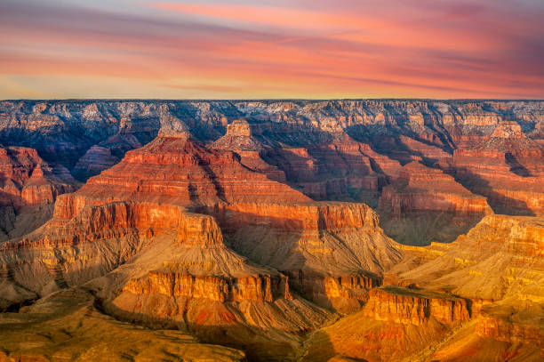

Le Grand Canyon
Visiter le Grand Canyon
Le Grand Canyon est une région des États-Unis qui fait rêver tous les voyageurs du monde entier. Le Grand Canyon s’étend sur plus de 450 km, c’est un site magique qui reflète bien à quel point la nature peut être sauvage et belle.
Ce que propose ce lieu

randonnée

visite-guidée

Parking gratuit

boutique-de-souvenirs

multilingue

restaurant

site-historique
Localisé dans l'État de l'Arizona, le Grand Canyon est une merveille naturelle aux teintes éclatantes de rose et d'orange.
Sculpté par le fleuve Colorado, cet immense canyon expose des millions d'années d'histoire géologique fascinante. Il illustre la diversité des paysages des États-Unis, un pays vaste où se côtoient presque tous les types de climat.
Les premières interrogations à considérer sont : quelles sont les meilleures destinations pour explorer le Grand Canyon ? Quels atouts présente chaque site ?
Par ailleurs, des centaines de kilomètres séparent les différentes rives, rendant souvent leur visite intégrale difficile.
Ainsi, si vous disposez d'une ou deux journées pour découvrir le Grand Canyon lors de votre voyage dans l'Ouest américain, il est préférable de choisir la zone qui vous conviendra le mieux.
Le Grand Canyon en un instant
Comme mentionné précédemment, le Grand Canyon est immense et regorge de nombreux points d'intérêt à explorer.
Trois sites principaux se distinguent : South Rim, North Rim et West Rim.
À vous de choisir celui qui vous convient le mieux, en sachant que le West Rim ne fait pas partie du Parc national du Grand Canyon.
Si vous manquez de temps pour lire l'intégralité de l'article, voici un résumé des informations pratiques à savoir pour visiter le Grand Canyon
La différence entre les 2 canyons
|
South Rim |
North Rim |
| Ouvert |
Toute l'année 24h/24 |
De mi-mai à mi-octobre |
| Période de forte affluence |
De mars à octobre |
De juillet à août |
| Avantages |
Large choix d'activités,
Nombreuses infrastructures |
Plus sauvage, plus de verdure,
Peu d'affluence |
| Inconvénients |
Forte affluence |
Peu d'infrastructures,
Moins d'activités |
South Rim
La rive sud est de loin la plus populaire, c’est d’ailleurs l’endroit que je vous recommande si c'est votre première visite du Grand Canyon.
Cette zone fait partie du Parc National du Grand Canyon, qui est un territoire protégé de plus de 5 000 km².
C’est ici que vous pourrez contempler les sites les plus emblématiques et spectaculaires du Grand Canyon (et en profiter pour faire de superbes photos).
C’est aussi dans cette zone que vous retrouvez la plupart des activités touristiques qui sont proposées pour visiter le Grand Canyon.

La rive sud est plus accessible que les autres zones du Grand Canyon.
Il est également ouvert toute l'année, alors que la Côte-Nord est fermée pendant les mois de neige de l'année.
C'est donc sur cette rive que vous rencontrerez le plus de monde (environ 90% des visiteurs du Grand Canyon choisissent la rive sud),
Mais c’est aussi là que vous trouverez le plus facilement des restaurants, des hôtels et des magasins.
Pour moi, si c’est votre première fois, c’est évidemment un domaine que vous devriez viser.
Si vous vous concentrez uniquement sur la rive sud, vous pouvez visiter le Grand Canyon en un jour ou deux.
Comment accéder à South Rim ?
Pour se rendre à South Rim, il vous suffira de choisir l'une de ces routes :
- au départ de Williams au Sud : l'I40 puis l'AZ64,
- au départ de Flagstaff au Sud : l'US180,
- depuis l'Est : l'US89 puis l'AZ64 qui est la fameuse route 64.
C'est un réel plaisir de conduire sur ces routes aux panoramas splendides.
Vous ne serez pas déçu d'avoir conduit pendant quelques heures !
"South Rim est vraiment la zone la mieux aménagée du Grand Canyon National Park, puisque des navettes gratuites connectées entre elles assurent des liens entre chaque point de vue :"
- les navettes bleues relient les points d'intérêt du Grand Canyon Village,
- les navettes rouges relient les vues panoramiques de l'Ouest (Hermit Road),
- les navettes jaunes relient les vues panoramiques de l'Est du Grand Canyon Village,
- en été, les navettes violettes relient Grand Canyon Village à Tusayan.
La principale différence avec la côte sud réside également dans les conditions météorologiques.
La Côte-Nord est plus humide et possède plus de verdure. Le paysage est également spectaculaire, mais il y a aussi moins de grandes attractions dans cette région.
Comme je vous l'ai déjà dit, la rive sud-est est meilleure pour une première visite au Grand Canyon.
Si vous souhaitez survoler le Grand Canyon en hélicoptère, c’est également un excellent choix.
La Côte-Nord peut également vous laisser des souvenirs impérissables durant les mois où elle est facilement accessible.
De quoi faire particulièrement plaisir aux amateurs de randonnée.
Comme je suis resté 10 jours pour visiter le Grand Canyon, j’ai pu faire une randonnée sur le North Rim ! C’est plus désert et surtout moins touristique.
Mais la South Bank est encore plus impressionnante et je vous conseille d’y aller si vous ne disposez que de quelques jours.
Comment accéder à North Rim ?
Ici aussi, il faut marcher. Vous devez d'abord prendre US89-Alt, puis AZ67.
Cette zone étant plus sauvage et moins visitée, vous aurez plus d'occasions d'admirer la faune et la flore de la région,
Surtout le bison, roi du parc national du Grand Canyon !
Il deviendra également plus difficile de trouver un logement dans la partie nord du parc national.
Donc, si vous souhaitez y rester quelques jours, je vous conseille de réserver le plus tôt possible.
Tarifs des séjours
| Durée |
Prix au North Rim |
Prix au South Rim |
| 5 jours |
650 € |
500 € |
| 12 jours |
1250 € |
1000 € |
| 20 jours |
2450 € |
2000 € |